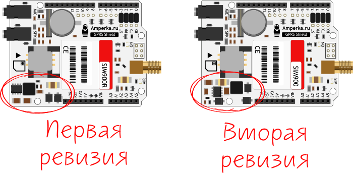
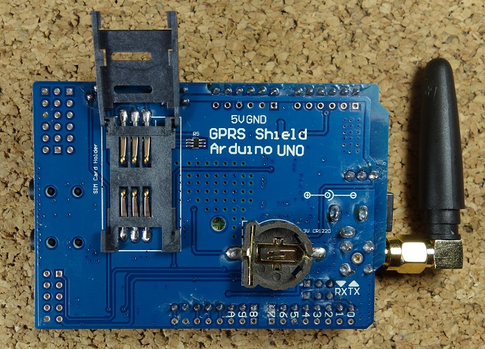

Схема подключения:
Описание:
Особенности:
- прошивка обычная: Revision:1137B10SIM900M64_ST, к сожалению не ENHANCE ...
- Одна плата имеет бумажную наклейку и версию 6_ST, а вторая глянцевую наклейку с версией 10_ST.
Обе платы имели настройку обмена 9600 бод.
Обновил firmware на последнюю 1137B06SIM900M64_ST_ENHANCE (17.07.2015г) модули исправны и работают.GSM расшифровывается как Global System for Mobile Communications и является международным стандартом мобильной связи.
GPRS расшифровывается как General Packet Radio Service. GPRS — это мобильная услуга в сетях сотовой связи 2G и 3G.
Плата GSM GPRS особенно полезна, так как позволяет:
Благодаря своим возможностям он идеально подходит для проектов с использованием Arduino, таких как:
В защитном чехле используется SIM-карта стандартного размера, а не микро- или нано-SIM. Если у вас микро- или нано-SIM, вы можете приобрести адаптер для SIM-карты.
Например, пройти через: Настройки > Расширенные настройки > Безопасность > Блокировку SIM-карты и отключить блокировку sim-карты с помощью pin-кода.
Рядом с разъемом питания находится переключатель для выбора источника питания. Рядом с переключателем на плате есть стрелка, указывающая положение переключателя для использования внешнего источника питания. Переместите переключатель, чтобы использовать внешний источник питания, как показано выше.
Для питания платы рекомендуется использовать блок питания 5В, способный выдавать 2А. Также можно использовать питание 9В, 1А или 12В, 1А.
В первой версии GPRS-Shield напряжение питания шилда составляло не более 9 В.
В новой ревизии обвязка питания была изменена и теперь допускает питание до 12 В.

На рисунке ниже показана задняя сторона платы. На ней есть держатель для SIM-карты и батарейка CR1220 на 3 В для часов реального времени (RTC).

На рисунке ниже показаны наиболее важные компоненты платы, на которые следует обратить внимание.
Убедитесь, что антенна хорошо подключена.
При выборе последовательного порта убедитесь, что перемычка подключена, как показано на рисунке ниже, для использования программного обеспечения.
Подключите щит к внешнему источнику питания 5 В. Убедитесь, что вы выбрали внешний источник питания с помощью тумблера рядом с разъёмом постоянного тока.
Для включения/выключения экрана нажмите и удерживайте кнопку питания около 2 секунд.
Примечание: вы можете автоматически включать защиту с помощью программного обеспечения. Узнайте, как это сделать, в разделе Автоматическое включение защиты после примеров кода.
https://we.easyelectronics.ru/part/gsm-gprs-modul-sim900-chast-vtoraya.html
Проверка AT-команд для модуля SIM900 — это процесс анализа ответов модуля на запросы, которые используются для проверки его работы, настройки или получения информации.
AT-команды — это короткие текстовые строки, которые модуль распознаёт, когда находится в командном режиме.
Важно: чтобы команду воспринял модуль, в её конце нужно поставить символ перевода каретки «».
SIM900 работают в трёх режимах: тестовый — модуль отвечает, поддерживает ли команда, и если поддерживает, то с какими параметрами; чтение — возвращаются текущие значения параметра; запись — после символа «=» идут новые значения параметров.
Чтобы проверить работу модуля, нужно отправлять AT-команды и анализировать ответы. Некоторые особенности анализа:
Проверка завершения вывода — если строка ответа равна коду конечного результата, вывод из командной строки завершён, и модуль готов к приёму новых команд.
Анализ префикса для строк информационного текста ответа — если команда имеет префикс, нужно проверить, начинается ли строка с него, и если да, обработать строку, иначе игнорировать её.
Проверка формата ответа — если команда имеет префикс, нужно проверить, начинается ли строка с него, и если да, обработать строку, иначе игнорировать её.
Отправьте командную строку AT (с правильным завершением “”).
Считывайте по одному символу, полученному от модема, пока не получите полную строку, завершающуюся “”, а затем проанализируйте эту строку.
Если строка соответствует конечному коду результата, значит, вывод из командной строки завершён (и модем готов принимать новые команды). Это первое, что нужно проверить!
Если у выполняемой команды AT есть префикс для строк информационного текста (он есть почти у всех), проверьте, начинается ли строка с этого префикса. Если да, обработайте строку, в противном случае проигнорируйте её.
Если у выполняемой команды AT нет префикса, вы, вероятно, захотите вывести на экран всё до получения окончательного кода результата. Это применимо только к устаревшим командам, таким как ATI, и при их разборе вам может быть важно, будет ли выводиться эхо-сигнал.
C командой AT+CMGL придётся повозиться немного больше, так как ответы разбиты на несколько строк.
Прежде всего, лучшим источником информации должна быть техническая документация производителя, а вторым по значимости — официальная спецификация 3GPP 27.005, в которой стандартизирована команда AT+CMGL.
Ответ на запрос AT+CMGL в текстовом режиме указан как
+CMGL: <index>,<stat>,<oa/da>,[<alpha>],[<scts>][,<tooa/toda>,
<length>]<CR><LF><data>[<CR><LF>
+CMGL: <index>,<stat>,<da/oa>,[<alpha>],[<scts>][,<tooa/toda>,
<length>]<CR><LF><data>[...]]Таким образом, после получения строки, начинающейся с «+CMGL:», все последующие строки до пустой строки («») относятся к этому формату.
См. этот ответ об общей структуре кода и его работе, хотя, как уже было сказано выше, многострочный ответ требует дополнительной обработки. Я бы использовал что-то вроде следующего (непроверенный код):
enum CMGL_state {
CMGL_NONE,
CMGL_PREFIX,
CMGL_DATA
};
// Extra prototype needed because of Arduino's auto-prototype generation which often breaks compilation when enums are used.
enum CMGL_state parse_CMGL(enum CMGL_state state, String line);
enum CMGL_state parse_CMGL(enum CMGL_state state, String line)
{
if (line.equals("\r\n") {
return CMGL_NONE;
}
if (line.startsWith("+CMGL: ") {
return CMGL_PREFIX;
}
if (state == CMGL_PREFIX || state == CMGL_DATA) {
return CMGL_DATA;
}
return CMGL_NONE;
}
...
write_to_modem("AT+CMGL=\"ALL\"\r");
CMGL_state = CMGL_NONE;
goto start;
do {
CMGL_state = parse_CMGL(CMGL_state, line);
switch (CMGL_state) {
case CMGL_PREFIX:
process_prefix(line); // or whatever you want to do with this line
break;
case CMGL_DATA:
process_data(line); // or whatever you want to do with this line
break;
case CMGL_NONE:
default:
break;
}
start:
line = read_line_from_modem();
} while (! is_final_result_code(line))Если вы используете arduino, я бы порекомендовал вам хорошую библиотеку! Вам не нужно разбираться в этом. Попробуйте http://www.gsmlib.org/ или любую другую, которая вам понравится.
Я приведу здесь один пример.
#include "SIM900.h"
#include <SoftwareSerial.h>
//If not used, is better to exclude the HTTP library,
//for RAM saving.
//If your sketch reboots itself proprably you have finished,
//your memory available.
//#include "inetGSM.h"
//If you want to use the Arduino functions to manage SMS, uncomment the lines below.
#include "sms.h"
SMSGSM sms;
//To change pins for Software Serial, use the two lines in GSM.cpp.
//GSM Shield for Arduino
//www.open-electronics.org
//this code is based on the example of Arduino Labs.
//Simple sketch to send and receive SMS.
int numdata;
boolean started=false;
char smsbuffer[160];
char n[20];
void setup()
{
//Serial connection.
Serial.begin(9600);
Serial.println("GSM Shield testing.");
//Start configuration of shield with baudrate.
//For http uses is raccomanded to use 4800 or slower.
if (gsm.begin(2400)){
Serial.println("\nstatus=READY");
started=true;
}
else Serial.println("\nstatus=IDLE");
if(started){
//Enable this two lines if you want to send an SMS.
//if (sms.SendSMS("3471234567", "Arduino SMS"))
//Serial.println("\nSMS sent OK");
}
};
void loop()
{
if(started){
//Read if there are messages on SIM card and print them.
if(gsm.readSMS(smsbuffer, 160, n, 20))
{
Serial.println(n);
Serial.println(smsbuffer);
}
delay(1000);
}
};
Контакты, используемые с Arduino:
D0 - Не используется, если выбран программный Software serial порт для обмена с Шильдом;
D1 - Не используется, если выбран программный Software serial порт для обмена с Шильдом;
D7 - Используется, если выбран программный Software serial порт для обмена с Шильдом;
D8 - Используется, если выбран программный Software serial порт для обмена с Шильдом;
D9 - Используется для программного контроля включения и отключения SIM900;
Предупреждение: A4 и A5 подсоединены к I2C контактам на SIM900. Однако SIM900 не поддерживает использование I2C.Чтобы проверить, всё ли работает правильно, вы можете протестировать плату, отправив AT-команды с последовательного монитора Arduino IDE. Для этого вам понадобится программатор FTDI.
Откройте Arduino IDE и выберите нужный COM-порт.
Откройте последовательный монитор.
Выберите скорость передачи данных 19200 бод — по умолчанию на плате установлено значение 19200 — и возврат каретки. Напишите AT в поле ввода и нажмите Enter.
/*********
Complete project details at http://randomnerdtutorials.com
*********/
#include <SoftwareSerial.h>
// Configure software serial port
SoftwareSerial SIM900(7, 8);
void setup() {
// Arduino communicates with SIM900 GSM shield at a baud rate of 19200
// Make sure that corresponds to the baud rate of your module
SIM900.begin(9600);
// Give time to your GSM shield log on to network
delay(20000);
// Send the SMS
sendSMS();
}
void loop()
{
}
void sendSMS()
{
// AT+CMGF=1\r - перевели SIM900 в текстовый режим (SMS mode)
// AT+CMGS="+79214524295" "Hello SMS from tve!"
// AT command to set SIM900 to SMS mode
SIM900.print("AT+CMGF=1\r");
delay(100);
// REPLACE THE X's WITH THE RECIPIENT'S MOBILE NUMBER
// USE INTERNATIONAL FORMAT CODE FOR MOBILE NUMBERS
// В примере от [GPRS Shield v2]
// gprs.sendSMS("+79263995140", "Hello SMS from Amperka!");
SIM900.println("AT+CMGS=\"+XXXXXXXXXXXX\"");
delay(100);
// REPLACE WITH YOUR OWN SMS MESSAGE CONTENT
SIM900.println("Message example from Arduino Uno.");
delay(100);
// End AT command with a ^Z, ASCII code 26
SIM900.println((char)26);
delay(100);
SIM900.println();
// Give module time to send SMS
delay(5000);
}
В этом коде вы начинаете с подключения библиотеки SoftwareSerial.h и создаёте программный последовательный порт на контактах 7 и 8. (Контакт 7 используется как RX, а контакт 8 — как TX)
#include <SoftwareSerial.h>
SoftwareSerial SIM900(7, 8);Созданная функция sendSMS() фактически отправляет SMS. Эта функция использует команды AT: AT+CMGF=1и AT + CMGS.
Вам нужно изменить номер мобильного телефона получателя на: (замените X на номер телефона получателя)
SIM900.println("AT + CMGS = \"XXXXXXXXXXX\"");Номер мобильного телефона получателя должен быть указан в международном формате.
Затем в следующей строке вы можете отредактировать текст, который хотите отправить.
// ЗАМЕНИТЕ НА СВОЁ СОБСТВЕННОЕ SMS-СООБЩЕНИЕ
SIM900.println("Пример сообщения от Arduino Uno.")Чтобы прочитать входящее SMS, загрузите приведённый ниже код в Arduino. После загрузки подождите 20 секунд, пока плата не установит соединение. Затем протестируйте скрипт, отправив SMS на номер SIM-карты платы. SMS отобразится на последовательном мониторе Arduino со скоростью передачи данных 19200 бод.
/*********
Complete project details at http://randomnerdtutorials.com
*********/
#include <SoftwareSerial.h>
// Configure software serial port
SoftwareSerial SIM900(7, 8);
//Variable to save incoming SMS characters
char incoming_char=0;
void setup() {
// Arduino communicates with SIM900 GSM shield at a baud rate of 19200
// Make sure that corresponds to the baud rate of your module
SIM900.begin(19200);
// For serial monitor
Serial.begin(19200);
// Give time to your GSM shield log on to network
delay(20000);
// AT command to set SIM900 to SMS mode
SIM900.print("AT+CMGF=1\r");
delay(100);
// Set module to send SMS data to serial out upon receipt
SIM900.print("AT+CNMI=2,2,0,0,0\r");
delay(100);
}
void loop() {
// Display any text that the GSM shield sends out on the serial monitor
if(SIM900.available() >0) {
//Get the character from the cellular serial port
incoming_char=SIM900.read();
//Print the incoming character to the terminal
Serial.print(incoming_char);
}
}В этом коде вы настраиваете модуль на отправку данных SMS на последовательный выход:
SIM900.print("AT+CNMI=2,2,0,0,0\r");Вы сохраняете входящие символы из SMS-сообщения в переменной incoming_char. Вы считываете символы с помощью функции SIM900.read().
/*********
Complete project details at http://randomnerdtutorials.com
*********/
#include <SoftwareSerial.h>
// Configure software serial port
SoftwareSerial SIM900(7, 8);
void setup() {
// Arduino communicates with SIM900 GSM shield at a baud rate of 19200
// Make sure that corresponds to the baud rate of your module
SIM900.begin(19200);
// Give time to your GSM shield log on to network
delay(20000);
// Make the phone call
callSomeone();
}
void loop() {
}
void callSomeone() {
// REPLACE THE X's WITH THE NUMER YOU WANT TO DIAL
// USE INTERNATIONAL FORMAT CODE FOR MOBILE NUMBERS
SIM900.println("ATD + +XXXXXXXXX;");
delay(100);
SIM900.println();
// In this example, the call only last 30 seconds
// You can edit the phone call duration in the delay time
delay(30000);
// AT command to hang up
SIM900.println("ATH"); // hang up
}Чтобы совершить звонок, используйте функцию callSomeone(), которая использует команду ATD.
SIM900.println("ATD + +XXXXXXXXX;");Вам нужно заменить X на номер телефона, по которому вы хотите позвонить.
Не забудьте подключить микрофон и наушники, чтобы совершить звонок.
В этом примере кода вызов завершается через 30 секунд с помощью команды ATH:
SIM900.println("ATH"); Отбой через 30 секунд не очень полезен, но в качестве примера работает хорошо. Идея заключается в том, что вы используете команду ATH при срабатывании события. Например, подключите к Arduino кнопку, которая при нажатии отправляет команду ATH для завершения вызова.
digitalWrite(9, HIGH);
delay(1000);
digitalWrite(9, LOW);
delay(5000);При использовании аккумуляторов 18650 следует иметь в виду, что если плата будет постоянно включена, аккумуляторы быстро разрядятся. Поэтому плату нужно включать только тогда, когда требуется отправить сообщение, позвонить и т. д.
Когда плата подключается к сети, индикатор NetLight должен мигать каждые три секунды (это означает, что устройство правильно подключено к сети). Чтобы включить плату, нажмите кнопку питания и удерживайте её около двух секунд. Затем загорится индикатор состояния, а индикатор NetLight будет мигать каждые 800 мс, пока устройство не найдёт сеть. Когда устройство найдёт сеть, индикатор NetLight начнёт мигать каждые три секунды.
Если устройство не подключается к сети, проблема может быть связана с вашей картой или с GSM-модулем.
Перед отправкой AT-команд GSM-модуль должен быть подключен к сети.
Мой модуль подключён к источнику питания 9В 1А, SIM-карта установлена правильно.
Найдите список AT-команд и узнайте больше о качестве сигнала, подключениях и т. д. Вы можете начать с проверки качества сигнала с помощью команды, например — SIM900.println(“AT+CSQ”) — (и отправить вывод обратно в последовательный порт).
Также проверьте команды AT+COPS? и AT+CREG? в различных вариантах…
Так вы узнаете, работает ли ваша антенна (CSQ) и есть ли несущие частоты, к которым вы можете подключиться или к которым уже подключены.
Вы можете узнать гораздо больше о своей плате и подключении с помощью AT-команд, даже без подключения к сети (или до него) !
–ò я –ø—Ä–∏–∑–Ω–∞—é, что подключить эти платы по-прежнему —Å–ª–æ–∂–Ω–æ‚Ķ но вы узнаете гораздо больше о своей плате, –ø–æ–ø—Ä–æ–±–æ–≤–∞–≤ эти команды üôÇ
Я выполнил описанные вами действия по настройке скорости передачи данных и т. д., но SMS-сообщение по-прежнему не отправляется на последовательный порт.
// Импортируем библиотеку GSM
#include ...2G — это система GSM, которая обеспечивает телефонные звонки и SMS. Если вы полностью отключите 2G, то, думаю, у вас не будет телефонной связи, поскольку она по-прежнему работает на 2G. (3G/4G/5G — это сервисы передачи данных, работающие параллельно с GSM.)
Поскольку SIM900 поддерживает 2G, и вы используете его только для отправки/получения SMS, я думаю, он продолжит работать. Если вы используете функции передачи данных через 2G, то, возможно, они будут каким-то образом отключены, но при этом SMS и телефонная связь будут работать. Но, скорее всего, им ничего не стоит поддерживать эту функцию, поскольку она в любом случае является частью GSM, которая по-прежнему необходима для базовой телефонной связи.
Ноэль, 1 марта 2023 года, 11:02
Стоит отметить несколько моментов:
На некоторых из этих плат вместо основного чипа SIM900 установлен SIM900A. Это становится очевидным, если посмотреть на плату или на реальные фотографии, а не на старые «стандартные» фотографии от интернет-поставщиков. Разница в том, что SIM900A работает в двух диапазонах, а не в четырёх. У меня есть несколько плат, и одна из них с SIM900A не подключается, несмотря на то, что я использую SIM-карты, которые работают на других платах.
Существует также версия этой платы немного меньшего размера без держателя аккумулятора и слота для SIM-карты на задней панели. В них также нет разъёмов для подключения телефона и чипа RTC. Отсутствие RTC не является проблемой, так как время можно определить по входящим звонкам и сообщениям. Удачи вам в ваших проектах…
{kind=link}